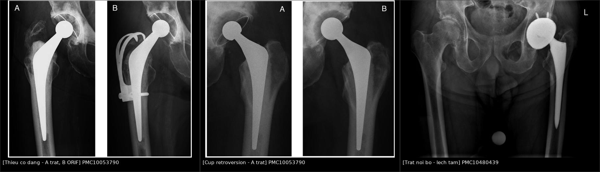
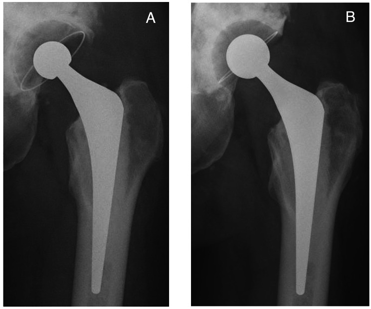
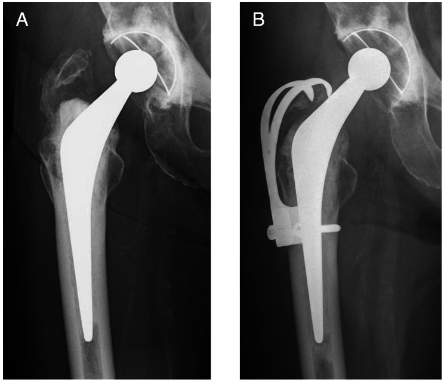
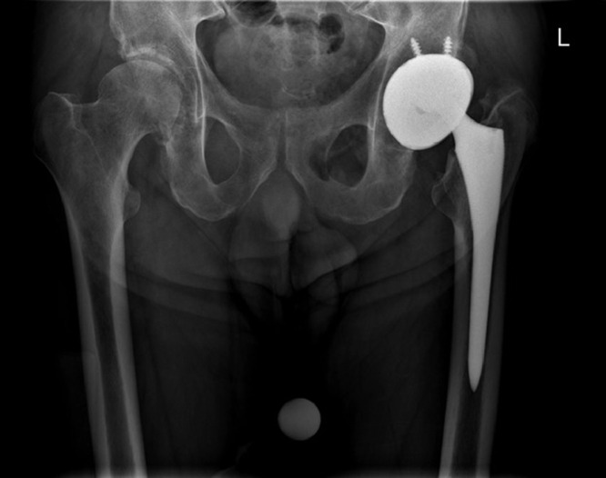

6151 — Trật khớp háng nhân tạo tái diễn: phân loại Dorr, đo anteversion trên CT và chọn mổ lại theo NGUYÊN NHÂN / Recurrent dislocation after total hip arthroplasty
Tags: pattern:di-lech-implant pattern:mat-dong-tam pattern:long-liner-lech-tam pattern:thieu-co-dang vung:khop-hang vung:co-xuong score:Dorr score:Lewinnek protocol:X-quang-khop-hang protocol:CT-anteversion
Mức chắc chắn (certainty): tổng hợp y văn (literature synthesis) — ghép đoàn hệ 71 khớp mổ lại vì trật tái diễn có phân loại Dorr + 5 hình X-quang (BMC Musculoskelet Disord 2023, PMC10053790, CC BY 4.0), ca trật nội bộ dual-mobility có X-quang + CT (Radiol Case Rep 2023, PMC10480439, CC BY 4.0), sổ bộ chỉnh hình quốc gia Thụy Điển 78.098 ca (Acta Orthop 2012, PMC3488169), sổ bộ Hà Lan 166.231 ca (Acta Orthop 2017, PMC5499330), đoàn hệ 1.066 khớp một phẫu thuật viên (J Clin Med 2026, PMC13514248), 4.904 ca trật trong 90 ngày (Arthroplast Today 2026, PMC13717001) và 119 ca thay cup đơn thuần: dual mobility so với cup thường (BMC Musculoskelet Disord 2025, PMC11954348). Số nào nguồn không nêu ghi "chưa rõ".
Câu chốt: trật khớp là nguyên nhân mổ lại sớm hàng đầu sau thay khớp háng, nhưng cùng một hình "đầu ra khỏi ổ" lại có 3 nguyên nhân ngược nhau: sai vị trí linh kiện (cup retroversion — sửa cup), thiếu cơ dạng/mất cân bằng mô mềm (cup có màng hoặc dual mobility), và mòn liner gây trật nội bộ (thay đầu/liner). Trong 71 khớp mổ lại vì trật tái diễn, Dorr type II (mất cân bằng mô mềm) chiếm 58/71 = 82%, type III (sai vị trí linh kiện) chỉ 11/71 = 15% — nghĩa là đa số ca không sửa được bằng cách "đặt lại cup cho đẹp" (PMC10053790). Ngược lại, 60,5% ca trật sớm chỉ cần nắn kín và chỉ 60% ca phải mổ lại được chuyển sang cup có màng (PMC13717001) — nên đừng mổ lại ngay ở lần trật đầu.
1. Tổng quan bệnh học – cơ chế hình ảnh
1.1 Vì sao khớp trật — 3 cơ chế cùng lúc (TẠI SAO)
- Mất "chiều cao nhảy" (jump distance): đầu chỉ nằm trong ổ khi lực nén của mô mềm quanh khớp > lực đẩy đầu ra khỏi vành cup. Chiều cao nhảy tỉ lệ với bán kính đầu × sin của góc bao phủ cup; vì thế đầu nhỏ (22 mm) và cup nông/đặt đứng đều làm giảm chiều cao nhảy → trật. Đây là lý do vật lý của con số: đầu 22 mm có RR 2,0 (1,2–3,3) so với 28 mm (PMC3488169).
- Sai định hướng cup: cup nghiêng quá nhiều (inclination > 50°) hoặc retroversion làm vành cup không còn "che" đầu khi gấp háng; anteversion chuẩn (vùng Lewinnek) là 15° ± 10° và inclination 40° ± 10°. Trong 1.066 khớp, sai vị trí cup chiếm 31,82% nguyên nhân trật, còn sai offset xương đùi chiếm 40,91% (PMC13514248) — offset sai làm cơ dạng chùng, tức là quay lại cơ chế mô mềm.
- Thiếu cơ dạng (abductor deficiency): cơ mông nhỡ – mông nhỏ giữ đầu trong ổ khi đứng và đi. Gãy mấu chuyển lớn không liền, rách gân mông nhỡ sau mổ, đường vào sau bóc tách nhiều đều làm mất lực này; trên phim mấu chuyển lớn di lệch lên trên là dấu hiệu gợi ý. Đây là Dorr type II — 82% ca trật tái diễn (PMC10053790).
- Mất cân bằng động (spinopelvic): cột sống thắt lưng cứng (hàn liên đốt, thoái hóa nặng) làm chậu không ngửa ra sau được khi ngồi → đầu bị đẩy ra sau; hàn cột sống thắt lưng là yếu tố nguy cơ trật độc lập, bất kể mổ trước hay sau thay khớp (PMC11212535).
- Mòn liner và trật nội bộ: liner polyethylene mòn lệch tâm → đầu "khoét" vào một phía, mất độ dày → đầu chui qua liner và nằm trực tiếp trong vỏ kim loại = trật nội bộ (intraprosthetic dislocation), thường nhiều năm sau mổ và có thể không thấy "đầu ra ngoài ổ" trên phim.
- Vì sao trật hay tái diễn: mỗi lần trật làm rách thêm bao khớp và gân mông nhỡ → mất thêm lực giữ; đồng thời trật tái diễn sau mổ lại vì trật là 18–39% (dẫn trong PMC10053790) — vòng xoáy "mất mô mềm → trật → mất thêm mô mềm".
1.2 Vì sao nhìn thấy — vật lý từng phương thức
- X-quang khung chậu thẳng + nghiêng/xuyên bàn (cross-table lateral): kim loại cản tia hoàn toàn, nên hình học đơn giản: tâm đầu và tâm cup phải trùng nhau. Trật = khoảng cách tâm–tâm > 0, hướng theo trục: ra sau–trên (hay gặp nhất với đường vào sau) hay ra trước–dưới. Phim nghiêng là bắt buộc, vì trên phim thẳng một đầu "nằm trong vành cup" vẫn có thể đã trật ra sau.
- Đo trên phim thẳng — nguyên lý chiếu: cup là vành ellipse; độ mở của ellipse cho inclination, còn tỉ lệ trục ngắn/trục dài phản ánh anteversion nhưng bị sai lệch bởi nghiêng chậu và xoay. Vì thế khi nghi ngờ sai vị trí: chuyển sang CT.
- CT có dựng ảnh: đo anteversion thật trên mặt phẳng ngang chỉnh theo trục chậu (tilt-corrected), đo inclination, offset, chênh chiều dài chân, và vị trí ốc vít/lỗ cup; CT còn phát hiện vỡ mấu chuyển, gãy quanh chuôi, khuyết xương sau cup.
- Vì sao "trật nội bộ" khó: trên phim chỉ thấy đầu lệch tâm trong vỏ cup (không ra ngoài vành), đôi khi có dấu "bong bóng" (bubble sign) — một vòng sáng bán nguyệt ở phía trên–ngoài do liner bị đẩy ra khỏi vỏ; CT xác nhận đầu ceramic/metal tiếp xúc trực tiếp vỏ kim loại, không còn lớp polyethylene và đầu polyethylene nằm lạc trong cơ mông (PMC10480439).
- MRI (MARS) — chỉ khi nghi phản ứng mô mềm: pseudotumor/ALTR quanh khớp kim loại–kim loại hoặc đầu modular; đây là nguyên nhân trật muộn do mô mềm bị phá hủy, không do sai vị trí.
1.3 Ngưỡng định lượng nằm lòng
| Đại lượng | Ngưỡng / con số | Ý nghĩa | Nguồn |
|---|---|---|---|
| Trật sau thay khớp nguyên phát (sổ bộ Bắc Âu) | 0,5% | Nền tảng để so sánh | PMC10053790 |
| Mổ lại vì trật (sổ bộ Thụy Điển) | 0,5% trong 78.098 ca | Trật là lý do mổ lại sớm hàng đầu | PMC3488169 |
| Trật trong 90 ngày (4.904 ca) | 0,77% | Đa số là trật sớm | PMC13717001 |
| Nắn kín đủ (không cần mổ) | 60,5% ca trật sớm | Chỉ định mổ lại phải chặt | PMC13717001 |
| Phải mổ lại → chuyển cup có màng | 60% ca mổ lại | Cup có màng là "cứu cánh" | PMC13717001 |
| Trật sau mổ lại (tổng quan 4.656 ca) | 9,0% | Mổ lại làm tăng nguy cơ | PMC10053790 |
| Trật tái diễn sau mổ lại VÌ trật | 18–39% | Vòng xoáy mô mềm | PMC10053790 |
| Vùng an toàn Lewinnek | inclination 40° ± 10° · anteversion 15° ± 10° | Ngưỡng kinh điển khi đo CT | Lewinnek 1978 |
| Nguyên nhân trật (1.066 khớp) | sai offset 40,91% · sai cup 31,82% | Hai nguyên nhân hàng đầu | PMC13514248 |
| Đầu 22 mm so với 28 mm | RR 2,0 (1,2–3,3) | Đầu nhỏ = nguy cơ cao | PMC3488169 |
| Đường vào sau so với trực tiếp bên | RR 1,3 (1,1–1,7) | Chênh lệch vừa | PMC3488169 |
| Đường vào ít xâm lấn | RR 4,2 (2,3–7,7) | Nguy cơ cao nhất | PMC3488169 |
| Gãy cổ xương đùi là chẩn đoán gốc | RR 3,9 (3,1–5,0) | Nhóm nguy cơ cao nhất | PMC3488169 |
| Đầu 32 mm so với 22–28 mm | HR 1,6 cho nhóm nhỏ | Đầu ≥ 32 mm bảo vệ | PMC5499330 |
| Đầu 36 mm, đường vào sau | HR 0,6 | Lợi ích rõ nhất ở đường vào sau | PMC5499330 |
| Dual mobility trong 287 ca | 1 ca mổ lại vì trật (0,35%) | Gần như xóa trật | PMC3488169 |
| Dual mobility khi thay cup đơn thuần | 0/49 so với 6/70 (p = 0,042) | Chọn cup khi mổ lại | PMC11954348 |
| Phân bố nguyên nhân Dorr (71 khớp) | type I 2 · type II 58 · type III 11 | Mô mềm chiếm 82% | PMC10053790 |
| Hướng trật (71 khớp) | trước 32 · sau 16 · không rõ 23 | Trật trước chiếm ưu thế trong nhóm mổ lại | PMC10053790 |
| Mổ lại lần nữa vì trật / hỏng implant | 7,0% / 1,4% | Kết quả mổ lại | PMC10053790 |
| Sống còn implant 10 năm sau mổ lại vì trật | 81,1% (65,5–96,8) | Tiên lượng để tư vấn | PMC10053790 |
2. Mẫu hình + chẩn đoán phân biệt theo vị trí (gamut)
- Mẫu hình 1 — đầu ra khỏi vành cup, hướng sau–trên: đường vào sau, gấp háng quá mức, cup retroversion/thiếu anteversion; gamut: sai cup, mất cân bằng mô mềm, impingement cổ–cup.
- Mẫu hình 2 — đầu ra trước–dưới: đường vào trước/bên, cup quá anteverted, hoặc động tác duỗi–xoay ngoài; thường gặp ở bệnh nhân có hàn cột sống thắt lưng (chậu không ngửa được).
- Mẫu hình 3 — đầu vẫn "trong" vành nhưng lệch tâm: trật nội bộ do mòn liner / liner bong khỏi vỏ; kèm dấu bubble sign.
- Mẫu hình 4 — trật kèm di lệch mấu chuyển lớn / gãy quanh chuôi: chấn thương mới trên nền khớp đã trật tái diễn; phải loại trừ gãy xương quanh implant trước khi nắn.
- Mẫu hình 5 — trật "tự phát" muộn, kèm khối mô mềm: pseudotumor/ALTR, nhiễm khớp nhân tạo, u hạt; gamut: phản ứng với mảnh vụn kim loại, nhiễm, u quanh khớp.
- Gamut theo nguyên nhân (dùng để chọn mổ lại, theo Dorr):
- Type I — tư thế (positional): linh kiện đúng, mô mềm tốt, trật do động tác; dạy lại tư thế, không mổ.
- Type II — mất cân bằng mô mềm: cup có màng (constrained), dual mobility, hoặc tái tạo cơ dạng; chiếm đa số ca mổ lại.
- Type III — sai vị trí linh kiện: đổi cup/đổi cổ–chuôi để chỉnh anteversion và offset.
3. Bảng so sánh phân biệt (ma trận đối chiếu)
| Thực thể (entity) | Hình ảnh điển hình | Chốt vào (rule-in) | Chốt loại (rule-out) | Gợi ý xác nhận |
|---|---|---|---|---|
| Trật khớp thật | Tâm đầu lệch hoàn toàn khỏi tâm cup trên cả 2 phim; hướng trước hay sau | Mất đồng tâm trên 2 bình diện | Đầu vẫn nằm trong vành cup trên phim nghiêng | Nắn kín dưới giảm đau; kiểm tra sau nắn bằng phim 2 bình diện |
| Trật nội bộ (intraprosthetic) | Đầu lệch tâm trong vỏ cup, vòng sáng bán nguyệt phía trên–ngoài; CT: đầu tiếp xúc vỏ kim loại, đầu polyethylene lạc trong cơ mông | CT thấy mất lớp liner giữa đầu và vỏ | Có lớp polyethylene đều giữa đầu và vỏ | CT không cản quang; không nắn kín đơn thuần — sẽ hỏng thêm |
| Mòn liner lệch tâm (chưa trật nội bộ) | Khoảng kim loại–kim loại hẹp một phía, đầu lệch lên trên | Đo độ dày liner còn lại trên phim/CT | Liner còn dày đều | Theo dõi, mổ lại khi mòn tiến triển |
| Sai vị trí cup | Inclination > 50° hoặc retroversion; đo trên CT | Anteversion ngoài 15° ± 10° hay inclination ngoài 40° ± 10° | Vị trí trong vùng an toàn và không có mất mô mềm | CT chỉnh trục chậu — không đo trên phim thẳng |
| Thiếu cơ dạng | Mấu chuyển lớn di lệch lên, mô mềm mỏng, khớp "lỏng" khi kéo | Trật khi kéo + đẩy bên trong màn huỳnh quang | Cơ dạng còn giữ, không di lệch mấu chuyển | Siêu âm gân mông nhỡ; MRI khi cần |
| Gãy xương quanh implant kèm di lệch | Đường gãy quanh chuôi/mấu chuyển, chuôi lún/xoay | Đường gãy + di lệch linh kiện | Không có đường gãy, linh kiện cố định | Phân độ Vancouver trước khi mổ |
| Pseudotumor/ALTR | Khối mô mềm quanh khớp, giảm tín hiệu T2, có vách; khuyết xương | MRI thấy khối + tiền sử kim loại–kim loại/đầu modular | Không có khối, mô mềm bình thường | MRI MARS; theo dõi kích thước |
| Nhiễm khớp nhân tạo | Khí quanh khớp, lỏng tiến triển, nang hoạt dịch cơ chậu | Khí + lỏng nhanh + CRP tăng | Không khí, CRP bình thường | Chọc khớp + cấy trước khi mổ lại |

4. Protocol chụp + hệ phân độ/điểm chuẩn hóa
4.1 Bộ phim tối thiểu khi vào viện vì trật
- X-quang khung chậu thẳng (đo offset, chênh chiều dài chân, vị trí cup) + phim nghiêng/xuyên bàn của háng bên trật — không bao giờ chỉ chụp một bình diện.
- Phim sau nắn: xác nhận đồng tâm, và tìm gãy mấu chuyển/chuôi do động tác nắn.
- CT khung chậu – háng khi: trật tái diễn (≥ 2 lần), nghi sai vị trí cup, nghi trật nội bộ, nghi gãy quanh implant, hoặc trước khi lên kế hoạch mổ lại.
- MRI MARS khi nghi pseudotumor/ALTR; siêu âm gân mông nhỡ khi nghi thiếu cơ dạng.
4.2 Đo trên CT — quy trình 3 bước
- Bước 1: dựng lại mặt phẳng ngang chỉnh theo trục chậu (qua hai gai chậu trước trên và hai ụ ngồi) — không dùng mặt phẳng ngang của máy.
- Bước 2: đo anteversion cup trên mặt phẳng đó và inclination so với đường liên ụ ngồi.
- Bước 3: đo offset xương đùi, chênh chiều dài chân, độ dày liner và vị trí ốc vít. Ghi cả hai bên để so sánh.
- Ngưỡng ra quyết định: anteversion ngoài 5°–25° hoặc inclination ngoài 30°–50° kèm trật tái diễn → mổ lại chỉnh cup. Nếu vị trí trong vùng an toàn mà vẫn trật → tìm nguyên nhân mô mềm (Dorr type II) trước khi đổi cup.
4.3 Thuật toán xử trí (theo nguyên nhân, không theo số lần trật)
flowchart TD
A[Truot khop hang nhan tao] --> B[Phim khung chau thang + phim nghieng]
B --> C{Nan kin duoc va dong tam?}
C -->|Khong| D[Mo mo: kiem tra liner, co dang, gay xuong]
C -->|Co| E[Danh gia nguyen nhan: CT do anteversion va offset, sieu am co dang]
E --> F{Truot lan dau va linh kien dung vi tri?}
F -->|Dung| G[Giao duc tu the + theo doi, KHONG mo lai]
F -->|Sai| H{Nguyen nhan chinh?}
H -->|Sai vi tri cup| I[Doi cup hoac chinh anteversion va offset]
H -->|Thieu co dang| J[Cup co mang hoac dual mobility, tai tao co dang]
H -->|Mon liner, trat noi bo| K[Doi dau va liner, kiem tra vo cup]
I --> L[Kiem tra bang phim 2 binh dien sau mo]
J --> L
K --> L
D --> L
4.4 Tiên lượng để tư vấn
- Sau mổ lại vì trật tái diễn: trật lại 7,0%, hỏng implant 1,4%, sống còn implant 10 năm 81,1%; Dorr type I (positional) là yếu tố nguy cơ mổ lại lần nữa (PMC10053790) — nên xác định đúng nguyên nhân trước mổ quan trọng hơn chọn implant "xịn".
- Sau thay cup đơn thuần: dual mobility 0/49 so với cup thường 6/70 (PMC11954348) — nếu mổ lại chỉ để đổi cup ở bệnh nhân nguy cơ cao, chọn cup dual mobility.
- Không hứa "hết trật" sau một lần mổ: ngay cả với cup có màng/dual mobility, trật vẫn có thể xảy ra; cần nói rõ nguy cơ 18–39% trật lại của nhóm mổ lại vì trật.
5. Biến thể bình thường và cạm bẫy
- Biến thể "cup trông nghiêng" do xoay chậu: chụp phim thẳng khi chậu xoay 10°–15° làm anteversion biểu kiến lệch 5°–10°; luôn so khoảng cách gai chậu – xương cùng hai bên trước khi kết luận "cup sai".
- Cạm bẫy 1 — chỉ chụp một bình diện: đầu trật ra sau có thể chồng lên vành cup trên phim thẳng và bị đọc là "đã vào ổ".
- Cạm bẫy 2 — "trật nội bộ" bị gọi là "mòn liner nhẹ": dấu bubble sign và đầu lệch tâm là cấp cứu cơ học; nắn kín trong trật nội bộ làm đầu ceramic cọ trực tiếp vỏ kim loại → mảnh vụn, hỏng thêm. CT trước, rồi mới can thiệp.
- Cạm bẫy 3 — bỏ sót gãy mấu chuyển lớn: gãy không liền gây thiếu cơ dạng, là nguyên nhân chứ không phải hậu quả của trật; chỉ đổi cup mà không xử lý mấu chuyển/co dạng = trật lại.
- Cạm bẫy 4 — "đầu to là tốt": đầu 36 mm giảm trật chỉ rõ ở đường vào sau (HR 0,6) nhưng với đường vào trước lại tăng mổ lại vì nguyên nhân khác (HR 1,5) (PMC5499330) — không có "một cỡ đầu tốt cho mọi đường vào".
- Cạm bẫy 5 — quên cột sống: bệnh nhân hàn cột sống thắt lưng có nguy cơ trật cao hơn; hỏi tiền sử và đánh giá tư thế ngồi–đứng trước khi chọn vị trí cup; hàn cột sống là yếu tố nguy cơ độc lập (PMC11212535).
- Cạm bẫy 6 — mổ lại quá sớm sau lần trật đầu: 60,5% ca trật sớm chỉ cần nắn kín; mổ lại ngay làm tăng nguy cơ chung (9,0% trật sau mổ lại) mà không giải quyết nguyên nhân.
6. Tự lượng giá — Blind Quiz ngay trên trang tĩnh
Ca 1 — Nữ 49 tuổi, trật tái diễn 2 năm sau thay khớp

- Gợi ý lâm sàng: đã trật nhiều lần trong 2 năm, mỗi lần nắn kín; không chấn thương mới.
- Câu hỏi: Hai dấu hiệu nào trên phim A chỉ sai vị trí cup? Vì sao phải đổi cup thay vì chỉ đổi đầu?
Bấm để hiện đáp án (findings + chẩn đoán)
- Dấu hiệu (findings): A — đầu ra khỏi vành cup phía trên–ngoài, cup retroverted (đường viền ellipse mở ngược so với bình thường); B — cup được chỉnh lại và đầu tăng từ 22,225 mm lên 26 mm.
- Chẩn đoán (diagnosis): Dorr type III — sai vị trí cup (retroversion); nguyên nhân là hình học linh kiện, nên chỉnh cup mới giải quyết được, đổi đầu đơn thuần không đủ.
- Nguồn ảnh: BMC Musculoskelet Disord 2023 (PMC10053790), Fig. 3 — CC BY 4.0.
Ca 2 — Nữ 70 tuổi, trật 3 tháng sau thay khớp, có gãy mấu chuyển

- Gợi ý lâm sàng: gãy mấu chuyển lớn sau mổ, đi khập khiễng, trật tái diễn nhiều lần dù cup "trông đẹp".
- Câu hỏi: Vì sao không đổi cup ở ca này? Cơ chế nào giữ đầu trong ổ bị mất?
Bấm để hiện đáp án (findings + chẩn đoán)
- Dấu hiệu (findings): A — đầu lệch ra ngoài–trên khỏi cup, mấu chuyển lớn di lệch lên trên, dụng cụ kết xương cũ; B — tấm móc mấu chuyển kết xương lại, đầu trở về đồng tâm.
- Chẩn đoán (diagnosis): Dorr type II — thiếu cơ dạng do gãy mấu chuyển lớn; xử lý là kết xương mấu chuyển (ORIF), không phải đổi cup.
- Nguồn ảnh: BMC Musculoskelet Disord 2023 (PMC10053790), Fig. 2 — CC BY 4.0.
Ca 3 — Bệnh nhân dual mobility, đau háng nhiều năm, phim "không trật khớp"

- Gợi ý lâm sàng: đau tăng dần, mất biên độ vận động, không có cú ngã; phim thẳng được báo "khớp còn trong ổ".
- Câu hỏi: Vì sao "không trật khớp" trên báo cáo vẫn là trật? Cần thêm hình ảnh gì và không được làm gì?
Bấm để hiện đáp án (findings + chẩn đoán)
- Dấu hiệu (findings): đầu lệch tâm lên trên–trong so với vỏ cup, không ra ngoài vành; trên phim nghiêng/CT thấy đầu ceramic tiếp xúc trực tiếp vỏ kim loại, đầu polyethylene nằm lạc trong cơ mông sau.
- Chẩn đoán (diagnosis): trật nội bộ (intraprosthetic dislocation) do mòn/bong liner — không nắn kín; cần CT rồi mổ thay đầu–liner (Radiol Case Rep 2023, PMC10480439).
- Nguồn ảnh: Radiol Case Rep 2023 (PMC10480439), Fig. 2 — CC BY 4.0.
Bài liên quan chéo
- 6140 – Lỏng vô khuẩn quanh khớp háng nhân tạo
- 6141 – Vôi hóa mô mềm quanh khớp háng nhân tạo
- 6155 – Gãy xương đùi quanh chuôi
- 6110 – Nhiễm trùng quanh khớp nhân tạo sau THA
- 301 – Protocol khung xương và khớp
Ảnh
- 3 ảnh X-quang gốc + 1 ảnh ghép, tất cả CC BY 4.0 — chi tiết Fig/PMCID trong
images/CREDITS.md. - Không tải ảnh từ PMC3488169, PMC5499330, PMC11954348, PMC13717001 (CC BY-NC/CC BY-NC-ND: chỉ dùng số liệu).
Không dùng để chẩn đoán độc lập khi chưa có người hướng dẫn.